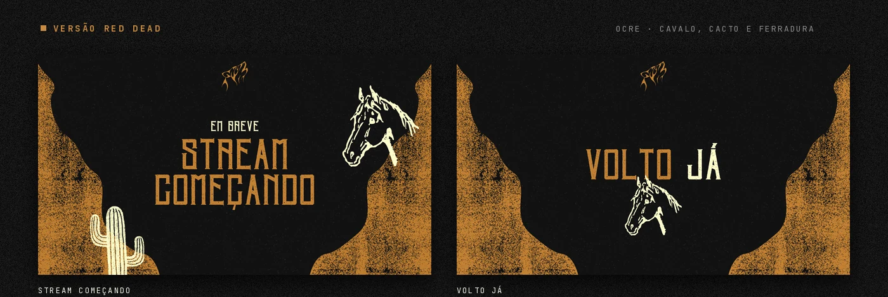
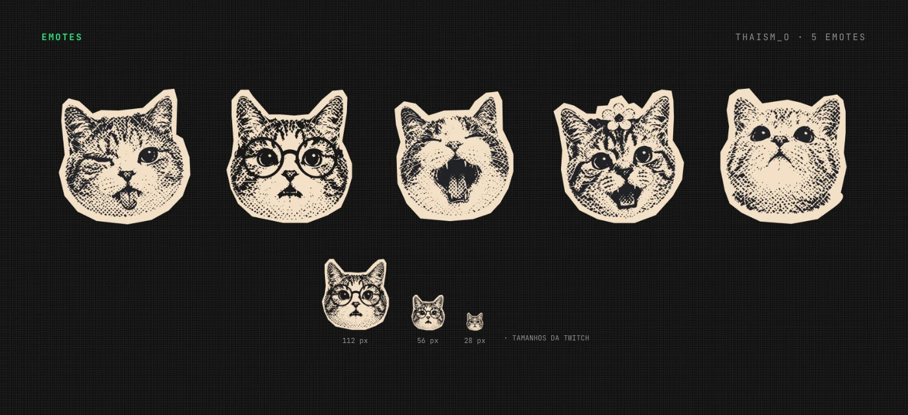
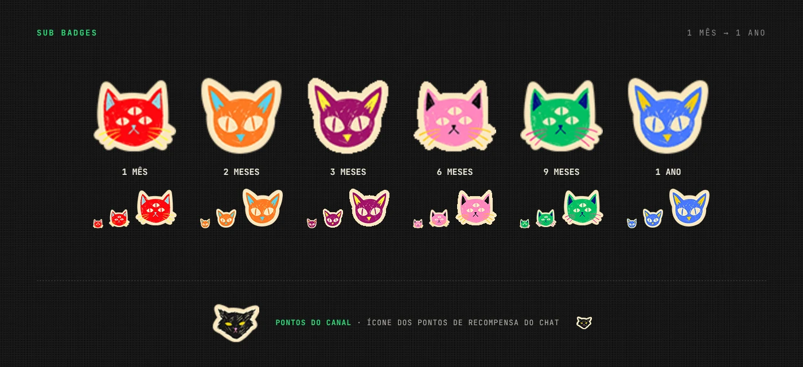
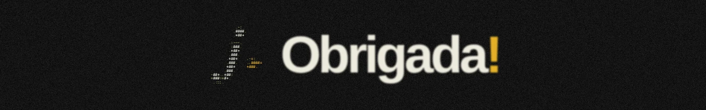

IDENTIDADE VISUAL · STREAMPACK
@thaism_o.
Elementos para a live de uma amiga que estava começando a transmitir na Twitch. O pacote de telas ganhou duas versões: a original do canal, em verde-neon, e uma exclusiva de Red Dead, em ocre, com cavalo, cacto e ferradura como elementos complementares. Badges de sub e emotes temáticos de gatos também compõem esse streampack.
- CLIENTE
- thaism_o [streamer]
- ANO
- 2026
- ENTREGAS
- Logo · Cenas · Emotes · Badges
- FERRAMENTAS
- Photoshop · Canva



